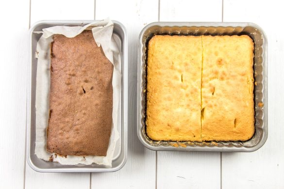
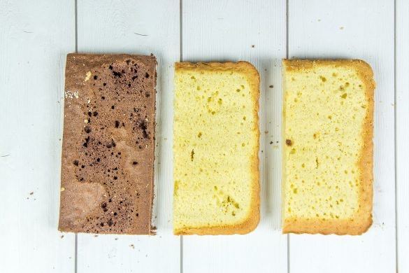
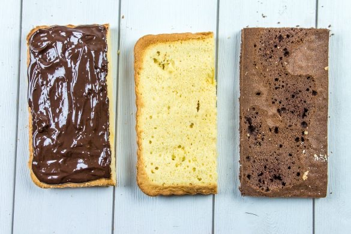
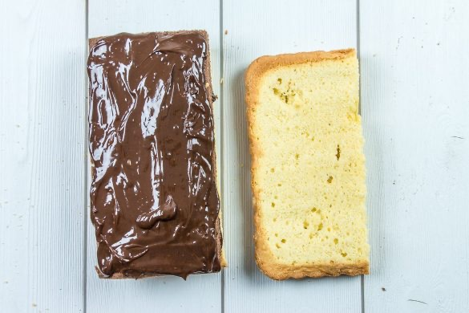
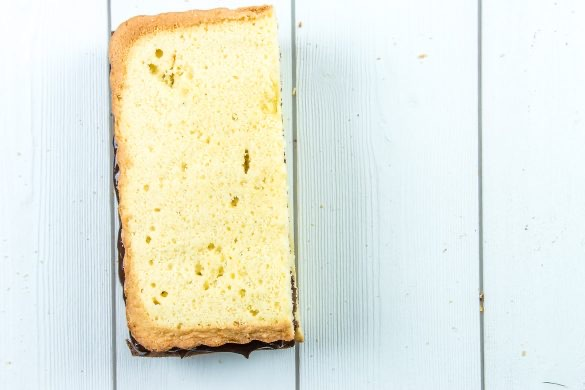
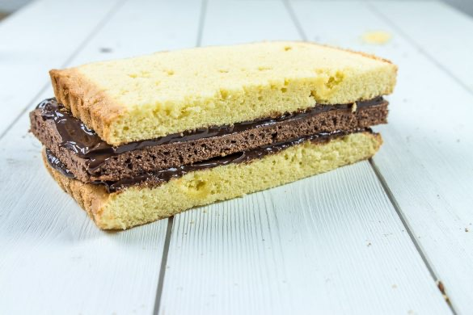
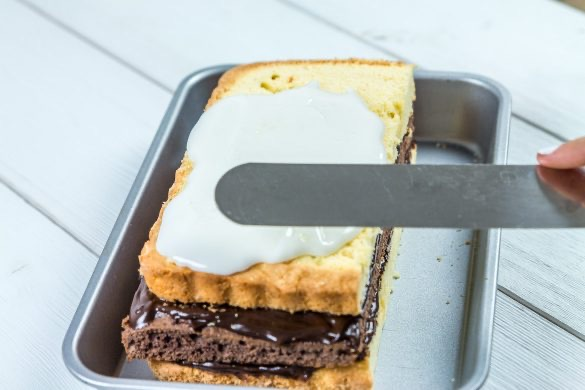
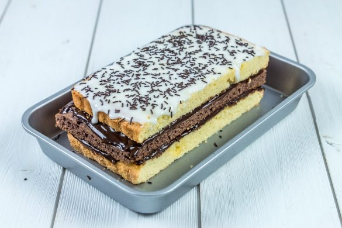
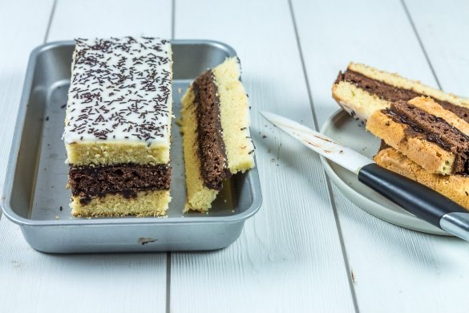
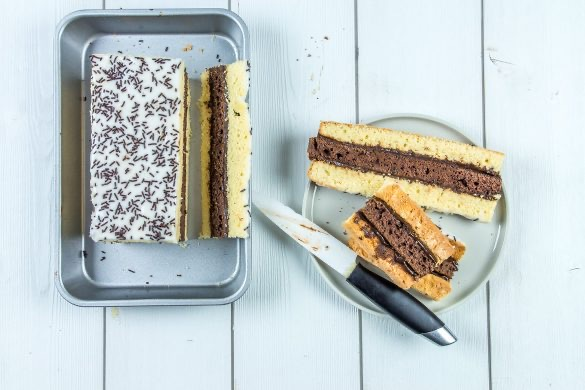

Napolitain maison

Et si on retombait un petit peu en enfance le temps d’une recette? Aujourd’hui je vous propose en effet la recette du Napolitain maison, sans conservateurs ni produits chimiques en tous genres et pour un résultat tout aussi délicieux!
Je ne sais pas si tout le monde parmi vous a déjà goûté une fois dans sa vie au napolitain. Je parle de l’enfance dans ma petite introduction car c’est vrai que dans les cours d’écoles que j’ai pu connaitre, un grand nombre d’enfants avaient ce type de pâtisserie à l’heure du goûter. Je ne vous cache pas que j’étais davantage portée sur les sandwichs aux fromages (jambon, pâté…) ou sur les crêpes préparées à la maison mais il m’est tout de même arrivée d’avoir moi aussi droit à un petit napolitain!
Depuis que je fais moi-même mes courses; il n’y a pas un seul paquet de gâteaux qui traîne dans les placards!! Avant tout parce que nous sommes plus salé que sucré mais aussi parce que je fais la guerre à tous ces produits industriels bourrés de cochonneries en tous genres! Je préfère donc ne rien avoir plutôt que d’ingérer toutes ces bêtises surtout quand on se rend compte que finalement on peut tout aussi bien les faire soi-même et en version bien plus « saine » (la preuve avec ce napolitain maison, bien que la notion de saine reste à discuter). Évidemment, cette version du napolitain se conservera bien moins longtemps (la faute au manque de conservateurs) et nécessitera un temps de préparation plus long comparé à un aller-retour chez l’épicier du coin (20 minutes contre 10 peut-être) mais quand on voit le résultat on se dit que ça vaut quand même peut-être le coup de prendre 20 minutes de sa journée pour préparer soi-même cette petite pâtisserie qui saura ravir toute la famille, croyez-moi!
Dans cette recette j’insiste vraiment sur le fait qu’il faut vraiment avoir des tailles de moules « correctes » pour avoir un beau rendu mais n’allez pas vous ruiner dans l’achat de moules supplémentaires! J’ai moi-même fait mes moules avec du papier sulfurisé et ça a très bien marché 🙂 !
Je vous laisse découvrir la recette du napolitain maison en pas à pas et je vous dis à très vite avec une nouvelle gourmandise!
Ingrédients
- Oeufs - 4
- Sucre en poudre - 130g
- Beurre fondu - 200g
- Farine T45 - 250g
- Sel - 1 pincée
- Levure chimique - 5g (1/2 sachet)
- Cacao en poudre non sucré (type Van Houten) - 1 càc
- Gousse de vanille - 1 (ou à défaut 1càc d'extrait de vanille ou 1 cas de sucre vanillé)
- Chocolat noir - 150g
- Crème liquide entière - 120ml
- Sucre glace - 100g
- Lait (ou de l'eau) - 2 càs
- Vermicelles au chocolat
Instructions
- Préchauffer le four à 180°
- Dans un saladier, mélanger les œufs et le sucre
- Faire fondre le beurre
- Ajouter le beurre fondu et mélanger
- Incorporer progressivement la farine, la levure et la pincée de sel
- Séparer la pâte en 2/3 et 1/3 dans deux saladiers distincts
- Verser les graines de la gousse de vanille (ou l'extrait de vanille ou le sucre vanillé) dans le saladier contenant les 2/3 de la pâte et ajouter le cacao dans le dernier tiers. Mélanger les deux pâtes
- Beurrer vos moules
- Transvaser la pâte à la vanille dans le moule le plus grand (pour moi le moule 24*24cm) et transvaser la pâte au chocolat dans le moule plus petit (pour moi moule fait maison 12*24cm)
- Faire cuire chaque génoise 15 minutes (pensez à bien surveiller la cuisson car selon les fours cela peut varier légèrement)
- A la sortie du four, démouler les génoises et laissez-les refroidir sur une grille
- Une fois tiède couper votre génoise à la vanille en deux dans le sens de la longueur de manière à obtenir deux génoises de même taille
- Casser grossièrement le chocolat
- Porter la crème à ébullition
- Dès les premières bulles verser immédiatement la crème sur le chocolat et mélanger délicatement jusqu'à ce que le chocolat fonde et que le mélange devienne homogène
- Laisser refroidir à température ambiante. La ganache ne doit plus être "coulante" pour le montage
- Avant de monter le napolitain, vous pouvez "lisser" vos génoises avec un gros couteau si vous ne les trouvez pas assez plates sur le dessus afin d'avoir un beau napolitain bien droit
- Alterner génoise à la vanille / ganache au chocolat / génoise au chocolat / ganache au chocolat / génoise à la vanille Poser la dernière génoise à l'envers : le dessous de la génoise vers le haut
- Laisser refroidir 1 heure au réfrigérateur afin que la ganache durcisse
- Dans un bol, mélange le sucre glace avec du lait (ou de l'eau)
- A titre indicatif j'ai mis deux cuillères à soupe d'eau mais il est possible que vous ayez besoin d'en mettre un peu plus (ou un peu moins)
- Le but est d'obtenir un glaçage ni top liquide ni trop épais!! (Pas facile je vous l'accorde!!) On ne veut pas un glaçage qui coule de tous les côtés du napolitain mais il doit tout de même s'étaler facilement avec une spatule!
- Une fois le napolitain bien refroidi, à l'aide d'une spatule, recouvrez-le de glaçage
- Saupoudrer de vermicelles au chocolat
- Placer au frais 30 bonnes minutes le temps que le glaçage se fige
- Couper les bords du Napolitain pour obtenir un gâteau bien net (et garder les chutes de gâteau pour un petit creux à l’occasion ;-)) Attention lorsque vous coupez les bords, pensez à bien nettoyer votre couteau pour ne pas faire de traces sur le prochain bord que vous allez découper!
- Vous pouvez le conserver à température ambiante dans du film alimentaire
- N'hésitez pas à le découper en plusieurs rectangles pour en faire des portions individuelles
- C'est prêt ! Bon appétit à tous 🙂










Les tips de la communauté
Gâteau très réussi jugé comparable voire supérieur aux versions industrielles. Nombreux succès reproductibles et réguliers. Certains utilisateurs relèvent des questions sur la texture de la génoise et l'épaisseur du glaçage.
Astuces
- Mélanger les œufs et sucre au fouet à main plutôt qu'au robot pour éviter une génoise compacte
- Ne pas monter les blancs en neige - mélanger les œufs entiers avec le sucre
- Laisser reposer au frigo au moins une nuit pour un meilleur goût
- Enrouler les génoises de film alimentaire pour conserver le moelleux
- Utiliser deux moules de tailles différentes pour faciliter la découpe
Variantes suggérées
- Remplacer la génoise par un gâteau de Savoie pour une texture différente
- Ajouter un peu de rhum à la ganache pour approcher le goût industriel
- Remplacer la crème liquide par de la crème épaisse pour la ganache
Ajustements signalés
- Génoise trop compacte - utiliser un fouet à main plutôt qu'un robot
- Glaçage trop liquide - ajouter moins de lait au sucre glace progressivement
- Découpe imparfaite - utiliser deux moules ou un couteau chaud